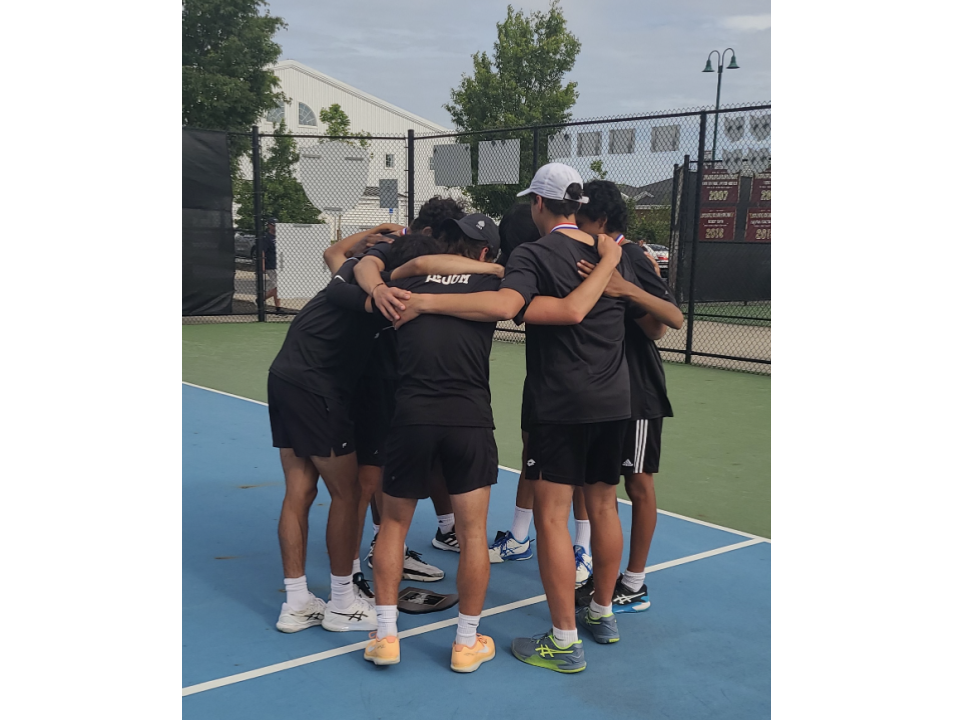

If I ask you to imagine what song should accompany a particular image or movie scene, or what piece of music best portrays a particular emotion, you could probably give me an answer.
That's probably because of the connection we have between music and our emotions.
And with this link, it’s no surprise that many people consider music to be their “therapy”, something that they can count on to help connect them to the emotions they’re feeling. It’s not just entertainment, it’s medicine for the mind and soul. In this blog, we will focus on the importance of music to us as a form of therapy, allowing us to cope with and amplify our emotions, and regulate our emotional well-being.
It is important to recognize a clear distinction between the use of "music as a therapy" and "music therapy". We believe "music therapy" to be more of a structured, evidence-based clinical practice that uses music interventions to achieve therapeutic goals, such as reducing anxiety or enhancing cognitive function. While we do find music to be valuable in this practice, we believe this to be less accessible than "music as a therapy", which will be our focus. "Music as a therapy" refers to the informal use of music by individuals to support emotional well-being, such as listening to music for stress relief or motivation. We wish to focus on this particular wording due to their greater accessibility, as anyone who has access to music can experience music as a therapy.

The Science Behind Music
This idea of music as a therapy isn’t just a feeling we share – It’s also backed up by science. The findings presented by Zatorre and Salimpoor (2013) reinforce the idea that music acts as an abstract reward, engaging “deeply rooted reward circuitry” in the brain that is normally activated by tangible, survival-related rewards like food or social bonding. In simpler terms, this means that listening to music activates reward systems in your brain that are similar to those when we eat or hang out with friends. We see that fundamentally, us humans are programmed to find dopamine through music, and it’s the same emotions that we feel for the basic human needs of social interaction and food. By stimulating these reward systems, music can serve as a powerful tool for managing stress, enhancing mood, and fostering emotional resilience. These effects suggest a biological foundation for why music is so important to us, and serves as a form of therapy without the controlled environment that we often view as “therapy”.
Brain imaging further supports these ideas, revealing that both familiar and novel music can stimulate pleasure centers in the brain, but in slightly different ways. For familiar music, anticipation and experience of emotional "chills" activate areas like the “dorsal striatum (DS) and ventral striatum (VS)”, showing that both prediction and fulfillment of musical patterns are inherently rewarding (Zatorre and Salimpoor 2013). In contrast, novel music shows “increased connectivity with regions such as the inferior frontal gyrus (IFG) and superior temporal gyrus (STG)”, highlighting how the brain processes new, emotionally rich experiences. In this way, our brains are wired in a way to find fulfillment through music. When you hear your favorite Rex Orange County song in concert and it gives you chills, that’s your brain telling you it’s satisfied. Similarly, your brain is stimulated when you listen to a new album from Kendrick Lamar for the first time. It’s a science that music is connected to your emotions, clinically proven.

What’s even cooler is that this brain activity is tied with songs that we can really relate to. A study by Blood and Zatorre showed that when participants listened to control music with similar songs that didn’t elicit strong emotions, this brain activity was nowhere near as strong (Blood and Zatorre 2001). This suggests that we aren’t sparked by what music sounds like, but the context, and why it’s particularly important to us. This idea of context is something we touched on in class, that certain memories or historical attachment adds to how we find value in music. Even with the same lyrics, a different performer with different intention can invoke different emotions in us.
Studies have also found there to be different emotions related to particular genres. A 2019 study by Thomas et al. explored how people's music preferences relate to their use of music for emotion regulation. Surveying 794 university students, the researchers found that individuals who favored genres like pop, rap/hip-hop, soul/funk, and electronica/dance were more likely to use music to increase emotional arousal and brain activity. Notably, fans of soul and funk music reported using these genres both to uplift positive emotions and to alleviate negative ones (Thomas et al. 2013). What’s interesting about this study is the difference between genres. It’s interesting to see that soul and funk were the most uplifting genres, perhaps tied to our natural instincts as humans to dance and sing along to relieve stress. This idea also aligned with our personal opinions, where most of our genres we found most positive were pop/house or funk. And perhaps the future style of studies could focus on more of the negative emotions, how we particularly align with those or alleviate these emotions, which focuses more on the therapeutic aspect of music in terms of arousing our emotional state.

Converge: Therapy through Performance and Community (Evan)
One of the highlights of my semester is always attending Converge, an event held annually by Duke's Asian Student Association. It's a celebration of Asian culture and heritage through a broad array of performances by many groups on campus. What makes it so special is the therapy through connection and performance. Watching hundreds of other students - some of which are your friends - showcase their talents brings a sense of intimacy beyond usual performance, for it is people that you see everyday that are the performers. There is constant interaction between performer and audience, with cheers from the crowd as people chant the names of their friends and maybe even family. This emphasizes music as a therapy through connection, where we are all united by celebration of culture. In class, we saw how valuable this idea of call and response was specifically with Enka, and how powerful a form of music it was following World War II. And similarly, it’s powerful at Converge, and I feel like I’m part of a bigger community, that we are all connected here. And of course, we’re all Duke students, so there’s that, but this form of connection and social bonding is important to us as humans, and reflects the form of therapy we seek through community.

I was able to join a group as we presented one of my friends, Brooke Li, flowers after her performance, and congratulated her on her amazing acts. This was probably the best part of this particular event, that there really was no distinction between performers and audience, that ultimately the shared connection of asian heritage or interest and connection through being students together transcended the separation of performance. Afterwards, I got to interview a few of the performers, and we asked them a couple questions about their experience and what they enjoyed. Andy Ko, who performed with Pureun, said what he loved most about the performance was actually the preparation, the hours he would spend practicing with the team and getting closer to them. Moreover, he highlighted how he loved that it gave him an avenue to connect to his Asian heritage, which he believes he may have lost a bit in high school, where most of his friends were not asian and thus he didn’t find as much connection to his culture. This was a common sentiment throughout the couple of people I talked to, that many of the Asian-Americans felt that they had lost a sense of identity the more they grew up.

And this ties into the complex emotions that we seek through music: not that it necessarily comes from the music itself, but that it connects us in ways that words simply can’t. For Brooke, she’s a part of a korean music group, a language that she does not speak or understand, but she can recognize the emotion through the music, and for her, now has developed permanent memories to attribute to the songs she performed. And that adds to this idea of therapy through music, that we tie music to events in our lives, and it allows us to relive the emotions, the highs and lows, the joy of performance and the pains of practice. This connection between our emotions and music is exactly what we aim to describe, the form of therapy that music provides as it bridges thoughts and emotions without requiring a common language as a medium. And for Andy, music ties into his culture, and that connection is something that music provides for him, connecting him to his culture, his family, in a way that’s not possible when he’s away from home and family.
On a personal level, music has always served as the perfect escape from the constraints of my current struggles, and acts as a temporary safe space where I can find a sense of calm. Just like the studies discuss, music provides a mental escape from stress and daily pressures, giving me a sense of coherence when the real world feels chaotic. Similarly, it can help express, reframe, or momentarily avoid difficult emotions I often feel. For example, I get extremely stressed and anxious before class exams. However, I can calm myself down by listening to Daniel Caesar’s album “Never Enough” on the walk to class. There’s something about the softness of his voice and the rhythm of his songs that helps me reset emotionally and feel more grounded by the time I sit down for the test. Music also easily transports me to different places or memories. I feel like specific songs carry fragments of our personal stories, whether that is a childhood moment or a turning point in life, which ultimately allow us to reconnect with parts of ourselves. For instance, whenever I listen to the Backseat Lover’s Album “When We Were Friends,” I am immediately transported to my second semester senior year of high school, which was one of the happiest times of my life. It reminds me of who I was then, and in a strange way, it helps me see how far I have come since. Escaping into music is not about avoiding reality, but instead about finding moments of connection, peace, and perspective.
Escapism through Music (Eric)
On a personal level, music has always served as the perfect escape from the constraints of my current struggles, and acts as a temporary safe space where I can find a sense of calm. Just like the studies discuss, music provides a mental escape from stress and daily pressures, giving me a sense of coherence when the real world feels chaotic. Similarly, it can help express, reframe, or momentarily avoid difficult emotions I often feel.
For example, I get extremely stressed and anxious before class exams. However, I can calm myself down by listening to Daniel Caesar’s album “Never Enough” on the walk to class. There’s something about the softness of his voice and the rhythm of his songs that helps me reset emotionally and feel more grounded by the time I sit down for the test. Music also easily transports me to different places or memories. I feel like specific songs carry fragments of our personal stories, whether that is a childhood moment or a turning point in life, which ultimately allow us to reconnect with parts of ourselves. For instance, whenever I listen to the Backseat Lover’s Album “When We Were Friends,” I am immediately transported to my second semester senior year of high school, which was one of the happiest times of my life. It reminds me of who I was then, and in a strange way, it helps me see how far I have come since. Escaping into music is not about avoiding reality, but instead about finding moments of connection, peace, and perspective.
In this way, music for me acts as an escape, and in this sense, as a therapy. It allows me to enter a space separate from the one I'm naturally in, and can return me to past memories or dreams of distant futures. This for me is what makes music so valuable, and so important to my identity, and something that's difficult to find outside of music.
Personal Stories
We also thought it would be valuable to add a few more personal anecdotes, how music has been a therapy for us throughout our lives. We believe these stories will add a personal touch onto our perspective of music being a form of therapy, connecting our emotions and memories in a way that language cannot.
Kevin: This story takes place during my junior year of high school, and we were on the verge of something amazing – our varsity soccer team had made our way to the playoff semifinals—the gateway to the state tournament. We were facing Shorewood, our fiercest conference rival, and this was supposed to be our year. We played with a lot of heart, chasing every ball like it was our last. But sometimes, effort isn't enough. The final whistle blew with a 4–1 scoreline as Shorewood came up victorious. Just like that, the dream was over. Back in the locker room, the silence hit harder than the loss. What was burned into my memory most was the seniors sitting quietly, cleats still on, heads low. I felt like I had let them down, and the drive home was one of the longest of my life. After getting back to my room, I didn’t want to talk to anyone. I didn’t want to think about soccer or what could’ve been, so I turned to music. I slipped on my headphones, laid back, and started playing songs that I felt would resonate with me. I vividly remember the first song to play was Moments by Micah Edwards. Then Ginny by Sylo.
And slowly, something shifted. These songs didn’t pretend to fix anything— but I felt like they met me where I was and carried me somewhere else, even if just for the short couple of minutes of which each song lasted. They didn’t erase the sting of the loss, but they softened it. They reminded me that it was okay to feel, to grieve, and to let go. Ever since that night, I realized that music isn’t just sound – it’s sanctuary.Varun: It was a chilly December afternoon, and I had just submitted my application to Duke. That should’ve felt like a relief, but instead, a whole new kind of pressure crept in: the alumni interview. I remember sitting at my desk, trying to psych myself up while flipping through sample questions and rereading my own application essays like they held some hidden answers. The closer the interview got, the more consumed I became with everything that could go wrong—stumbling over a sentence, blanking on a response, not sounding “Duke” enough. My thoughts raced in circles, and no amount of prep seemed to quiet them. In a moment of frustration, I tossed my notebook aside, put on my headphones, and hit shuffle on a playlist I hadn’t touched in months. The first song that came on? Hakuna Matata from The Lion King.
I laughed a little at first—of all the songs in the world, that one? But I let it play. Then I played it again. And again. Somehow, those goofy lyrics and warm, nostalgic chords worked like a reset button. It reminded me of being a kid, watching the movie on a Saturday morning without a care in the world. No applications. No interviews. Just a bunch of cartoon animals singing about letting go of worries. As strange as it sounds, the message landed. No, it didn’t erase the importance of the moment, but it reminded me that stress doesn’t have to have the final word. I didn’t need to be perfect—I just needed to be myself.
By the time I joined the interview the next day, the nerves were still there, but they had softened. I felt a little lighter, a little more grounded, and even found a moment to joke with the alum about how Hakuna Matata had made it into my pre-interview ritual. It was the first real laugh of the conversation—and from that point on, everything flowed. That moment taught me something I still carry with me: sometimes the best preparation is permission to breathe.
Daniel: During my senior year tennis season, music served as more than just background noise and motivation. It was a tradition, a unifier, and a common thread that brought us all together.
Our team was a very mixed bag in both our personalities and play-styles. A lot of the freshmen were very shy and didn’t talk too much, while there were juniors and seniors who were very loud and outspoken. Some people were laid-back and didn’t care much about their results, while others were gunning for or already received offers from D1 colleges to play tennis. At practice and home matches, we often stuck to our own routines. But once we boarded the bus for a tournament or an away match, something shifted. Someone would pull out a roll-away speaker, and whether it be 2000s summer music, rap, or country, we all leaned in and bonded over the music. It didn’t matter if we were all nervous going into the state finals, in those moments, we were just teammates singing along and forgetting about everything else.
Over time, we started associating certain songs with specific memories. For example, Queen’s “We are the Champions” was the last song that played before we played and beat our rival team 2 hours away from home. Music became a tradition that transcended our skill levels and personalities; even the quietest players knew all the lyrics to the songs.
The tennis season taught me that music is so much more than entertainment. It’s something that brings vastly different people together.

Closing Thoughts
At this point, we hope to have convinced you that why music matters so much to us as people is its capabilities as a form of therapy, connecting us to our emotions, our thoughts, and our memories in a way that is simply difficult through language. Looking back at the scientific articles we explored, we know this is proved by science: that music does enhance our emotional state, and it activates part of the brain involved in our reactions to social situations, or even eating. And we've explored how this has impacted people throughout Duke, how events like Converge bring together hundreds of students to bond over music, how it ties to their own cultures, and to their own experiences. And we've seen many personal anecdotes as well, how music has helped calm Varun in some of his most stressful moments, or how it helped Kevin deal with a difficult loss in the playoffs. The truth is that music is a medium that we have all used in some form or capacity as a way of therapy. And we hope that you continue to use it as a form of therapy, to help you feel better or seen when you're feeling down, or make the highs of life just a bit better.

Works Cited
Blood, A. J., & Zatorre, R. J. (2001). Intensely pleasurable responses to music correlate with activity in brain regions implicated in reward. PNAS, 98(20), 11818–11823. https://doi.org/10.1073/pnas.191355898
Thoma, M. V., et al. (2013). Emotion regulation through listening to music in everyday situations. Cognition and Emotion, 27(3), 534–543. https://doi.org/10.1080/02699931.2012.750235
Zatorre RJ, Salimpoor VN. From perception to pleasure: music and its neural substrates. Proc Natl Acad Sci U S A. 2013 Jun 18;110 Suppl 2(Suppl 2):10430-7. doi: 10.1073/pnas.1301228110. Epub 2013 Jun 10. PMID: 23754373; PMCID: PMC3690607.